세 경로로 모았다.
| 경로 | 실제로 한 것 | 산출 |
|---|---|---|
| 크롤링 | Game UI Database 의 Civilization V 항목(스크린샷 48장, 1920×1080 원본)을 수집하고 화면 분류 라벨과 짝지음. 그중 13장을 내려받아 픽셀 단위로 판독, 팔레트를 실측 | 화면 유형 17종 목록, 컴포넌트 도감(§4), 팔레트(§3) |
| 문서 | 아트디렉터 Dorian Newcomb 인터뷰(Game Informer 2010), CivFanatics 모딩 위키(Lua/XML UI 구조), Enhanced UI 모드 문서(바닐라 UI 의 정보 격차 목록) | 디자인 의도(§2), UI 아키텍처(§5) |
| 영상 | 유튜브 인터페이스 가이드 재생목록을 링크로 확보(§6). 직접 플레이는 이 환경에 게임이 없어 불가 — 대신 스크린샷 13장을 화면 상태별(턴 0 / 중반 / 전투 / 모달)로 골라 정적 판독으로 보완 | 화면 흐름의 맥락 |
아트디렉터 Dorian Newcomb 의 설명: 뉴욕 미드타운·록펠러 센터 일대의 아트데코 건축에서 출발했고, 인터페이스 아티스트 Russ Vaccaro 가 Grim Fandango(아트데코+망자의 날)의 기억을 보탰다. 핵심 문장 셋:
스크린샷의 균일 영역에서 14×8 픽셀 중앙값으로 샘플링했다.
| 용도 | 실측값 | 어디서 |
|---|---|---|
| 딥 티일 — 헤더 밴드·타이틀 바 | #0e3733 ~ #133632 | 사회정책 모달 헤더, 테크 팝업 헤더 |
| 티일 탭 — 탭 띠·내비 | #0c3d39, #215a54 | 시빌로피디아 상단 탭 띠 |
| 패널 암부 — 모달 본체 | #020403 ~ #05090c ~ #171d1b | 피디아 본문·테크 팝업·툴팁 |
| 금 트림 | #d4b982 (밝음) · #c8a45a (진함) | 모달 테두리·필리그리 |
| 낡은 황동 — 미니맵 프레임 | #d5d5af | 미니맵 모서리 장식 |
| 크림 라벨 | #f9ffbe ~ #fffec1, 본문 #f5edd0 대 | 버튼 라벨·헤더 소대문자 |
| 상태 리본 녹청 | #3e5a44 ~ #778e72 | "A UNIT NEEDS ORDERS" 리본 |
| 자원 색 코딩 | 과학 하늘 · 골드 노랑 · 문화 마젠타 · 식량 연두 · 행복 노랑 스마일 | 상단 바 전역 — 숫자 자체에 색을 입힘 |
타이포그래피: 게임 전체가 Tw Cent MT(Twentieth Century — 1930년대 기하학적 산세리프, 아트데코 시대 서체) 하나로 통일.
assets/UI/Fonts 에 크기별 비트맵(TwCenMT16/22/24…)로 내장. 헤더는 자간을 넓힌 대문자(SOCIAL POLICIES, NEXT TURN),
본문은 동일 서체의 소문자 혼용 — 서체 하나 + 자간·대문자 변주만으로 위계를 만든다.
맛보기: Adopt Next Turn
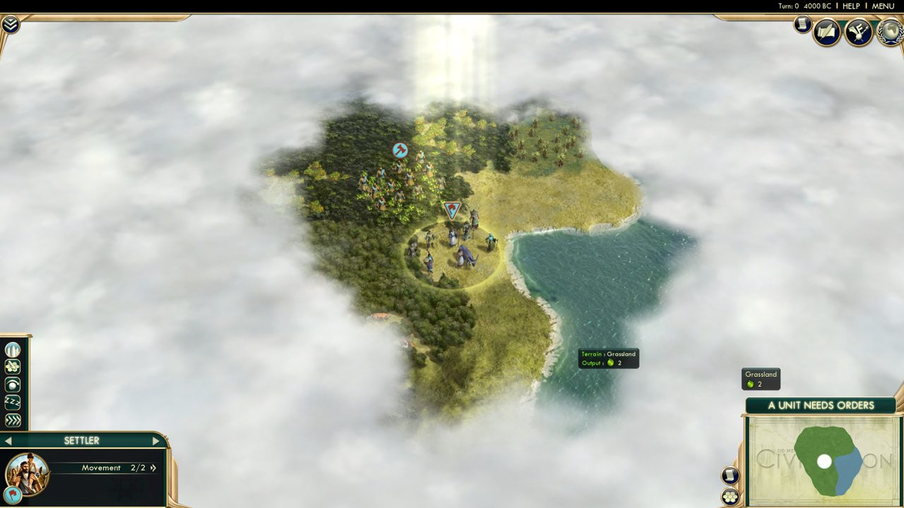
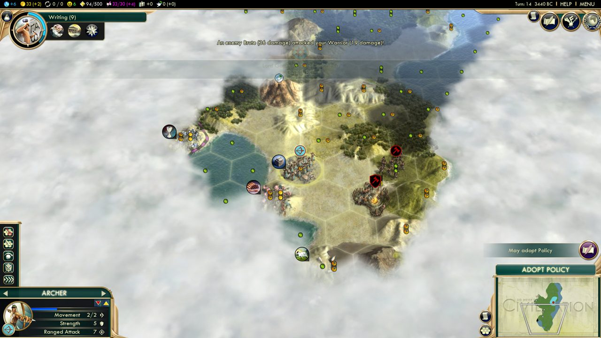
| 컴포넌트 | 관찰된 문법 |
|---|---|
| 상단 바 (TopPanel) | 화면 최상단 전폭, 높이 ~28px, 완전 불투명 검정. 좌측에 자원 아이콘+색 숫자(과학 파랑 "+6", 골드 노랑 "33 (+2)", 행복 스마일, 황금기 "94/500", 문화 마젠타 "33/30 (+4)"…), 우측에 Turn: 14 3440 BC | HELP | MENU. 장식 없음 — 순수 정보 띠. |
| 코너 버튼 (DiploCorner) | 우상단 원형 버튼 4개: 황동 링 + 어두운 내부 + 백색 아이콘(사회정책·외교·과학승리·추가정보). 원은 이 게임 버튼의 기본형. |
| 연구 트래커 | 좌상단. 큰 원형 메달리온(기술 일러스트+청색 진행 링) + 우측으로 뻗는 티일 밴드에 "Writing (9)" — 이름(남은 턴). 그 아래 검은 소패널에 이 기술이 열어줄 것들의 원형 아이콘 나열. 원+밴드 결합은 문명5 헤더의 표준 문법. |
| 유닛 패널 (UnitPanel) | 좌하단. 티일 그라데이션 헤더 바("ARCHER" + 좌우 화살표 = 유닛 순환), 아래로 원형 유닛 초상(황동 링), 행 단위 스탯(Movement 2/2 », Strength 5 🛡, Ranged Attack 7). 액션 버튼(요새화·경계 등)은 좌측 세로 스택의 정사각 버튼들. |
| 미니맵 패널 (MiniMapPanel) | 우하단. 황동 프레임+모서리 장식, 내부는 양피지 톤 지도. 프레임 좌측에 작은 원형 토글(전략뷰·격자·자원 표시). 지도 위임이 아니라 액자 — 프레임이 강하게 존재. |
| 상태 리본 (ActionInfoPanel) | 미니맵 바로 위 가로 리본. 상태 머신의 현재 행동 요구를 대문자로: A UNIT NEEDS ORDERS → CHOOSE RESEARCH → ADOPT POLICY → NEXT TURN. 클릭하면 해당 행동으로 점프. "지금 뭘 해야 하는가"가 항상 한 곳에 있다. |
| 알림 스택 (NotificationPanel) | 우측 가장자리에 원형 메달리온이 수직으로 쌓임(황금기·정책·조우…). 각 항목은 아이콘+툴팁, 클릭 시 해당 사건으로 카메라 이동. 종류별 색 링. |
| 도시 배너 (CityBanner) | 지도 위 부유. 티일 반투명 캡슐: 좌측 사각 배지에 인구수, 중앙 ★+도시명, 우측 원형 초상, 캡슐 위에 방패(방어력 10). 성장·생산 진행은 캡슐 테두리의 가는 게이지로. |
| 툴팁 / 타일 플레이트 | 암부(#171d1b) 사각, 금 헤어라인 테두리. 키워드에 색(지형명 연두, 산출 아이콘 인라인). 우하단 고정형 타일 정보 플레이트("Encampment / Plains, River / 🍏1 🔨1")도 동일 문법. |
| 전투 피드 | 화면 상단 중앙에 흰 텍스트 한 줄("Your Warrior (25 damage) attacked an enemy Brute (25 damage)!") — 패널 없이 텍스트만. 로그는 쌓지 않고 최신 한 줄. |
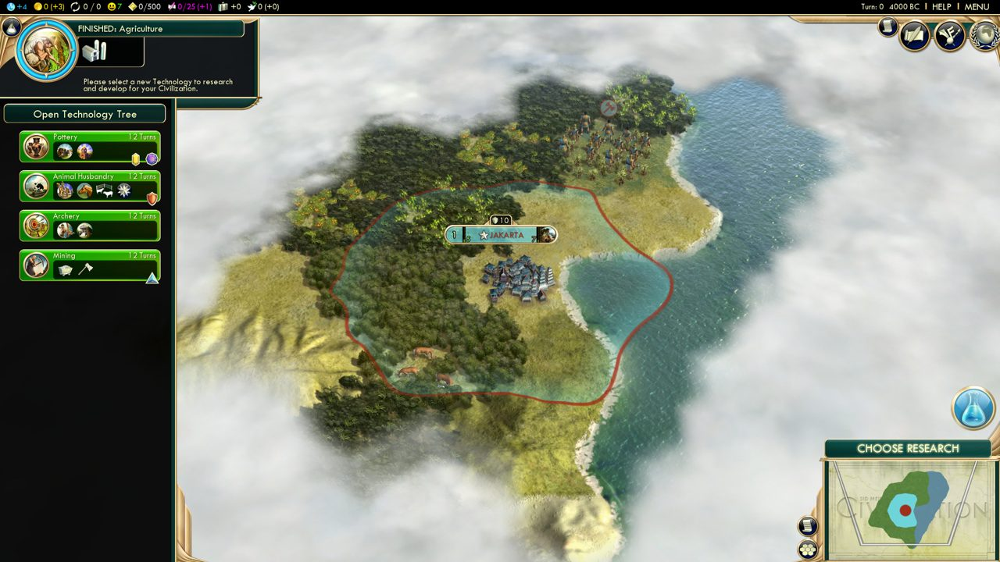
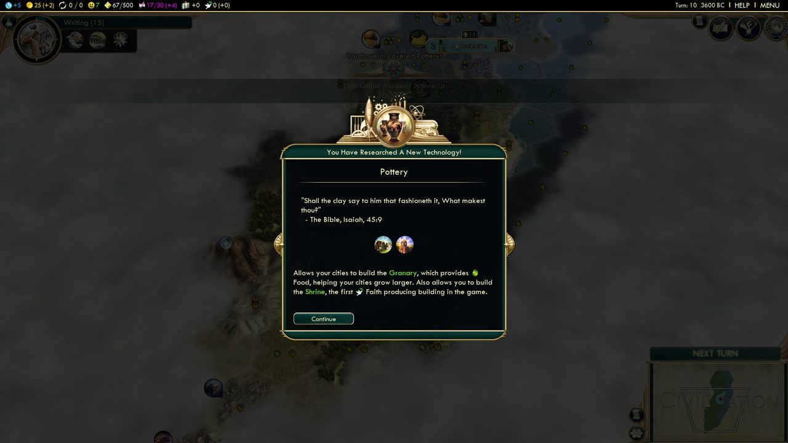
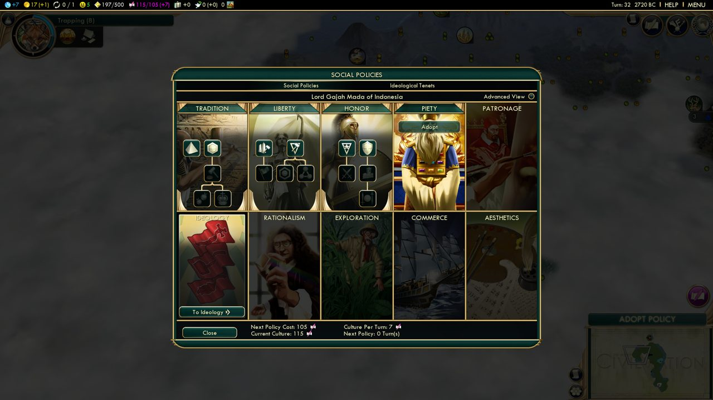
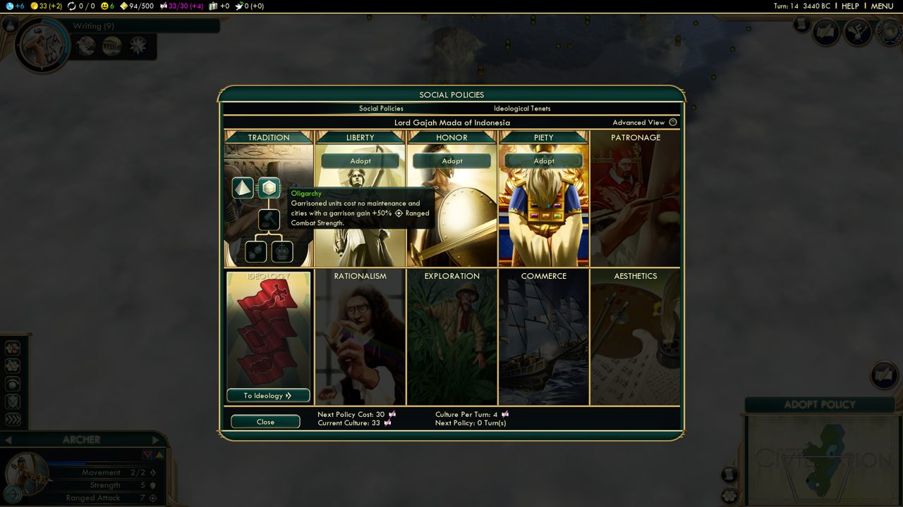
| 모달 해부 | 관찰 |
|---|---|
| 프레임 | 상부 모서리 큰 라운드(≈18px), 하부는 작음 — "위가 둥근 방패" 실루엣. 금 이중 테두리(외곽 진한 금 + 내부 헤어라인). 좌우 중앙에 황동 꽃장식(피벗처럼). |
| 크레스트 | 프레임 상변 중앙 위로 돌출하는 금 장식 + 원형 문장(팔각 별). Military Overview·Culture Overview·Diplomacy Overview 전부 동일 — 모달의 "왕관". |
| 헤더 밴드 | 티일(#133632) 띠에 자간 넓은 제목. 그 아래 탭 행(Your Culture / Swap Great Works / … )은 밝은 밑줄로 활성 표시. |
| 본체 | 거의 검정. 표는 얇은 티일 행 구분선 + 정렬 아이콘 컬럼 헤더. 스크롤바는 금 트랙+티일 썸. |
| 버튼 | 티일 그라데이션 알약 + 금 헤어라인 + 크림 라벨(Close, Adopt, Thank You, Continue). 호버 시 밝아짐. 파괴적/전쟁 행동도 같은 스타일(DECLARE WAR) — 색으로 위협하지 않고 위치로 구분. |
| 배경 처리 | 모달 뒤 게임 화면은 어둡게+탈채도. 모달 밖 HUD 는 그대로 보임 — 맥락 유지. |
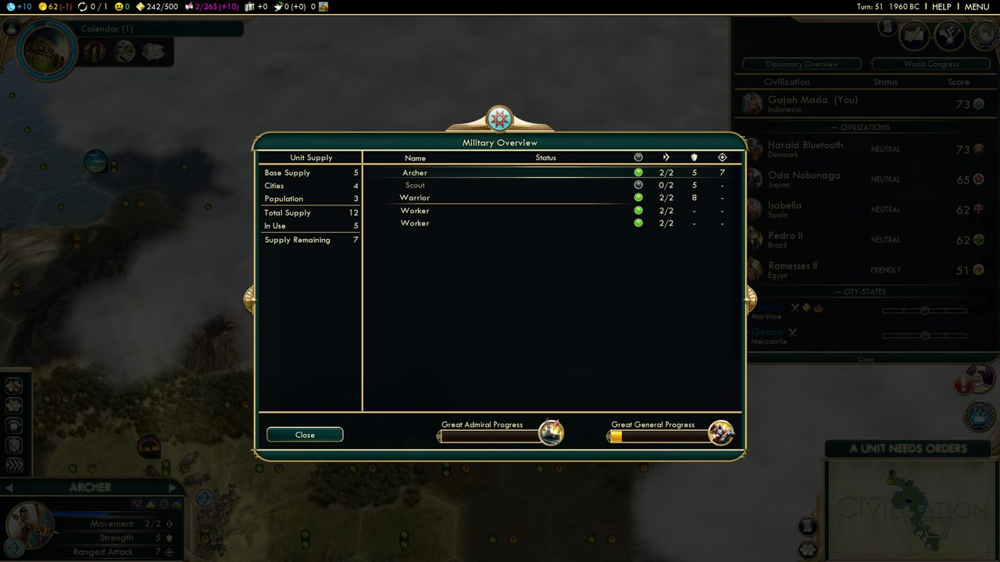
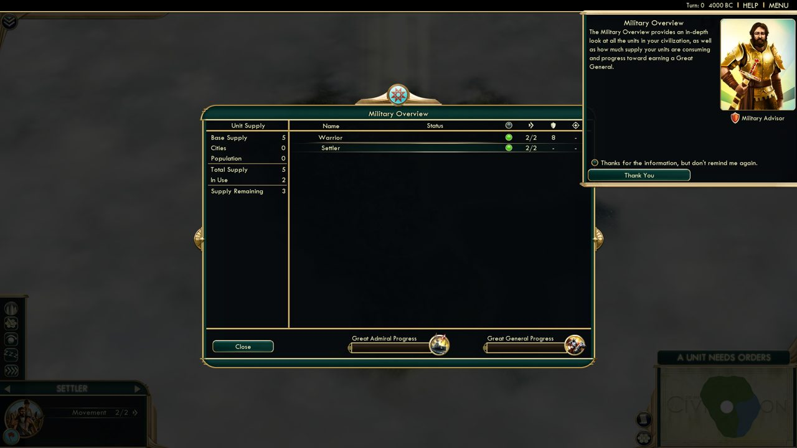
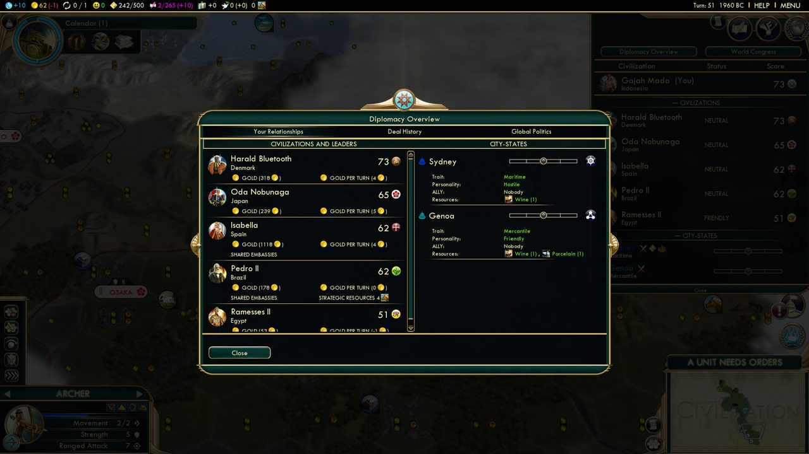
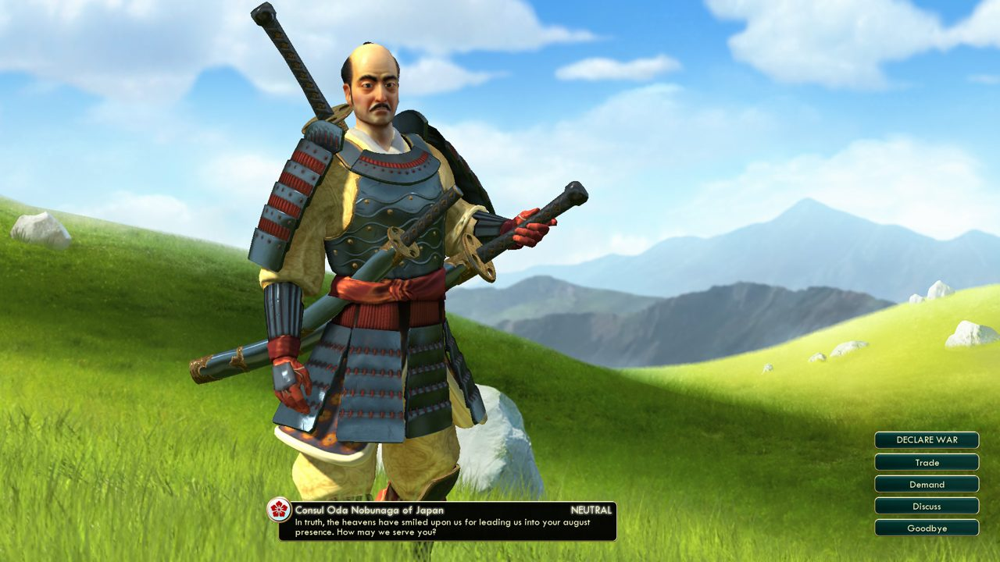
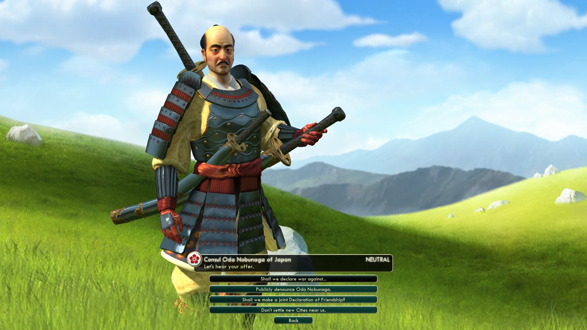
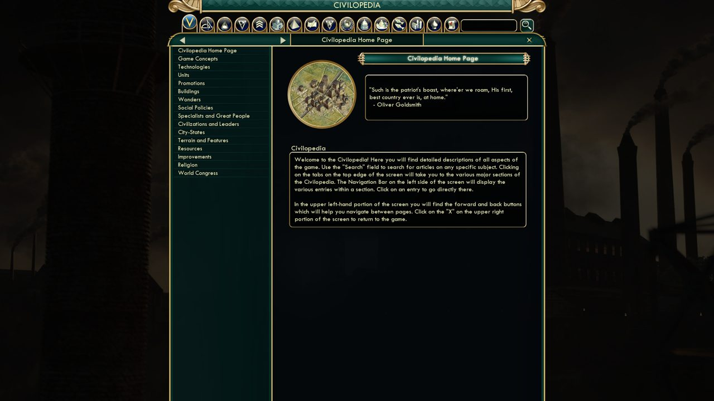
Title ScreenMode & Screen Select ×2Load/SaveSettings ×2Custom Game Rules ×2Pre-Game & LobbyPauseHUD ×4Maintenance & Management ×7Skill Tree(사회정책) ×2Codex(시빌로피디아) ×3Dialogue & Speech ×2Modal: Info/Tutorial ×4Notification/Combat Log ×2Progress UnlockedOverview & StatsLeaderboardsNews/Updates
TopPanel.lua/.xml, UnitPanel, NotificationPanel, CityView, DiploCorner, MiniMapPanel, TechTree … XML 이 레이아웃(컨트롤 트리), Lua 가 로직. 경로 주소로 접근(/InGame/TopPanel/TopPanelInfoStack).WorldAnchor 가 도시 배너처럼 지도 좌표에 UI 를 못박는 컨트롤.| 분류 | 링크 |
|---|---|
| 스크린샷 | Game UI Database — Civilization V (48장 원본 출처, 이 보고서 img/ 는 여기서 축소 인용) |
| Interface In Game (게임 UI 스크린샷 컬렉션 — Civ VI 항목 보유) | |
Arioch's Analyst — 기술 트리 (트리 전도: vexing_332techs_original.jpg) | |
| 디자인 의도 | Game Informer — 아트디렉터 Dorian Newcomb 인터뷰 (아트데코·알루미늄·원·포스터 아이콘) |
| CivFanatics — 인터뷰 스레드 | |
| ArtStation — Civ5 UI 아이콘 모드 아트(Tomasz Bełzowski) · Russell Vaccaro 아이콘 원화 | |
| UI 구조 | Civ5 모딩 위키 — Lua and UI Reference (컨트롤 어휘) |
| CivFanatics — Lua/XML UI 모드 만들기 | |
| Enhanced User Interface (EUI) — 바닐라 UI 정보 격차 목록 | |
| 영상 | JumboPixel — Civ V Tutorials, Tips and Guides (재생목록) |
| Civ 5 improved EUI 소개 영상 · EUI 설치 가이드 | |
| 서체 | Tw Cent MT — 게임 내장 UI 서체 (assets/UI/Fonts) |
기획 v2(knowledge-atlas_260816)의 "문명5 화면 4개 대응"을 이번 실측으로 구체화한다.
| Civ5 컴포넌트 | 알타이야 대응 | 이식 규칙 |
|---|---|---|
| 상단 바(TopPanel) | 헤더 → 상시 상태 바 | 전폭 불투명 검정 띠. 좌측에 저장소 수지(원자·행위자·관계·사료권 수를 색 코딩 숫자로), 우측에 현재 뷰·시대 필터 상태 |
| 상태 리본(ADOPT POLICY…) | 미니맵 위 행동 리본 | 선택 상태에 따라 "행위자를 선택" → "관계 N개 표시 중" → "시대: 오스만기" 대문자 리본 |
| 도시 배너(WorldAnchor) | 지도 위 행위자 배너 | 티일 반투명 캡슐 + 좌측 배지(연결수=중심성) + 이름. 선택 시 금 링 |
| 모달 프레임+크레스트 | 외교 화면·행위자 카드 | 상부 라운드 + 금 이중 테두리 + 티일 헤더 밴드 + 상단 크레스트(팔각 별 문장) |
| 알림 스택 | 우측 사료권 메달리온 | 원형 아이콘 수직 스택 — 클릭 시 그 사료권으로 지도 이동 |
| 시빌로피디아 | 백과 뷰(엔티티 카드) | 좌 내비 리스트 + 페이지 헤더 플레이트 + 원형 삽화 메달리온 문법 |
| 미니맵 액자 | 미니맵/범례 패널 | 황동 프레임 + 양피지 톤 |
| Tw Cent MT | 제목·라벨 서체 | 웹 대체: 기하학적 산세리프(Futura 계열 폰트 스택) + 자간 넓은 대문자. 본문 한글은 시스템 고딕 유지 |